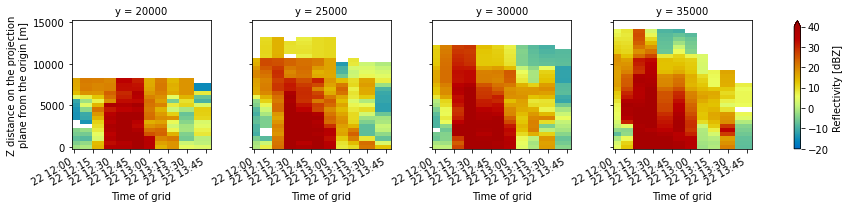

Look at Gridded NEXRAD Data
Contents
Look at Gridded NEXRAD Data¶
This is NEXRAD data from AWS (NOAA/Unidata) that has been gridded by Scott Collis using PyART
import xarray as xr
from distributed import Client, LocalCluster
import pyart
## You are using the Python ARM Radar Toolkit (Py-ART), an open source
## library for working with weather radar data. Py-ART is partly
## supported by the U.S. Department of Energy as part of the Atmospheric
## Radiation Measurement (ARM) Climate Research Facility, an Office of
## Science user facility.
##
## If you use this software to prepare a publication, please cite:
##
## JJ Helmus and SM Collis, JORS 2016, doi: 10.5334/jors.119
cluster = LocalCluster()
client = Client(cluster)
cluster
/Users/mgrover/opt/anaconda3/envs/tracer-dev/lib/python3.9/site-packages/distributed/node.py:180: UserWarning: Port 8787 is already in use.
Perhaps you already have a cluster running?
Hosting the HTTP server on port 52130 instead
warnings.warn(
LocalCluster
a1781979
| Dashboard: http://127.0.0.1:52130/status | Workers: 4 |
| Total threads: 12 | Total memory: 16.00 GiB |
| Status: running | Using processes: True |
Scheduler Info
Scheduler
Scheduler-7fdee3cf-024c-420a-9582-23ebebc6be1d
| Comm: tcp://127.0.0.1:52131 | Workers: 4 |
| Dashboard: http://127.0.0.1:52130/status | Total threads: 12 |
| Started: Just now | Total memory: 16.00 GiB |
Workers
Worker: 0
| Comm: tcp://127.0.0.1:52176 | Total threads: 3 |
| Dashboard: http://127.0.0.1:52183/status | Memory: 4.00 GiB |
| Nanny: tcp://127.0.0.1:52137 | |
| Local directory: /Users/mgrover/git_repos/tracer-radar-analysis/notebooks/march-22-2022/dask-worker-space/worker-5n6bhucq | |
Worker: 1
| Comm: tcp://127.0.0.1:52178 | Total threads: 3 |
| Dashboard: http://127.0.0.1:52181/status | Memory: 4.00 GiB |
| Nanny: tcp://127.0.0.1:52136 | |
| Local directory: /Users/mgrover/git_repos/tracer-radar-analysis/notebooks/march-22-2022/dask-worker-space/worker-smimnk_r | |
Worker: 2
| Comm: tcp://127.0.0.1:52177 | Total threads: 3 |
| Dashboard: http://127.0.0.1:52180/status | Memory: 4.00 GiB |
| Nanny: tcp://127.0.0.1:52138 | |
| Local directory: /Users/mgrover/git_repos/tracer-radar-analysis/notebooks/march-22-2022/dask-worker-space/worker-eywyxxxg | |
Worker: 3
| Comm: tcp://127.0.0.1:52175 | Total threads: 3 |
| Dashboard: http://127.0.0.1:52182/status | Memory: 4.00 GiB |
| Nanny: tcp://127.0.0.1:52135 | |
| Local directory: /Users/mgrover/git_repos/tracer-radar-analysis/notebooks/march-22-2022/dask-worker-space/worker-g0n203ku | |
Spin up a Cluster¶
ds = xr.open_mfdataset('../../data/nexrad-grid/xxx*')
ds_lat_lon = ds.set_index(x='lon',
y='lat')
ds_lat_lon.isel(z=10, time=0).reflectivity.plot(cmap='pyart_HomeyerRainbow',
vmin=-10,
vmax=60)
<matplotlib.collections.QuadMesh at 0x1967a0550>
ds.sel(x=0, y=range(20000, 40000, 5000)).reflectivity.plot(x='time',
col='y',
vmin=-20,
vmax=40,
cmap='pyart_HomeyerRainbow');
